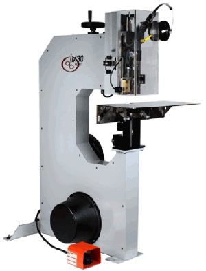

PRODUCTOS
por referencia
M30 Stitcher



La cosedora mas versatil ofrecida por DeLuxe Stitcher, la M30 satisface los requerimientos de cualquier tamaño de casa de cosido. Perfecto para trabajos de cosido planos, montados y de esquinas. La M30 incluso puede hacer una puntada de puñalada.
Ficha técnica
Capacidad: de 2 hojas a 1-14 pulgadas (32 mm) hasta 2 pulgadas de puntada de puñalada.
Tamaños de los alambres: 20-28 redondo o 19x21-1/2, 20x24 y 21x25 plano.
Remache: Remachador movil para una cosida plana y altura de mesa ajustable para la puntada de puñalada.
Mesa: 36” de ancho de uso pesado, 18” de boca para trabajo plano y montado.
Velocidad: 180 cosidas por minuto
Se encuentra disponible un kit opcional para cosido en bucle.